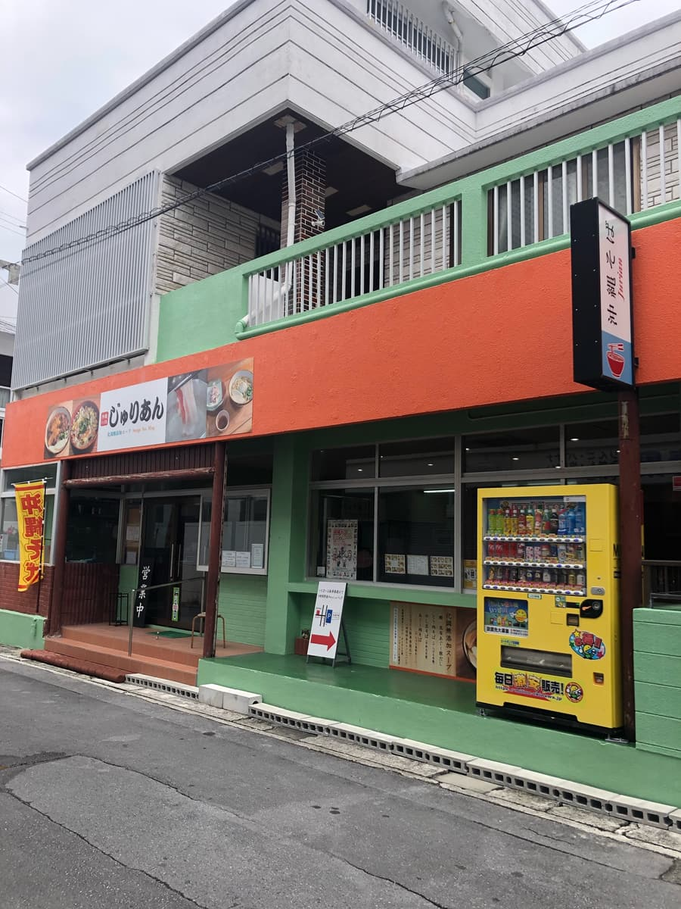
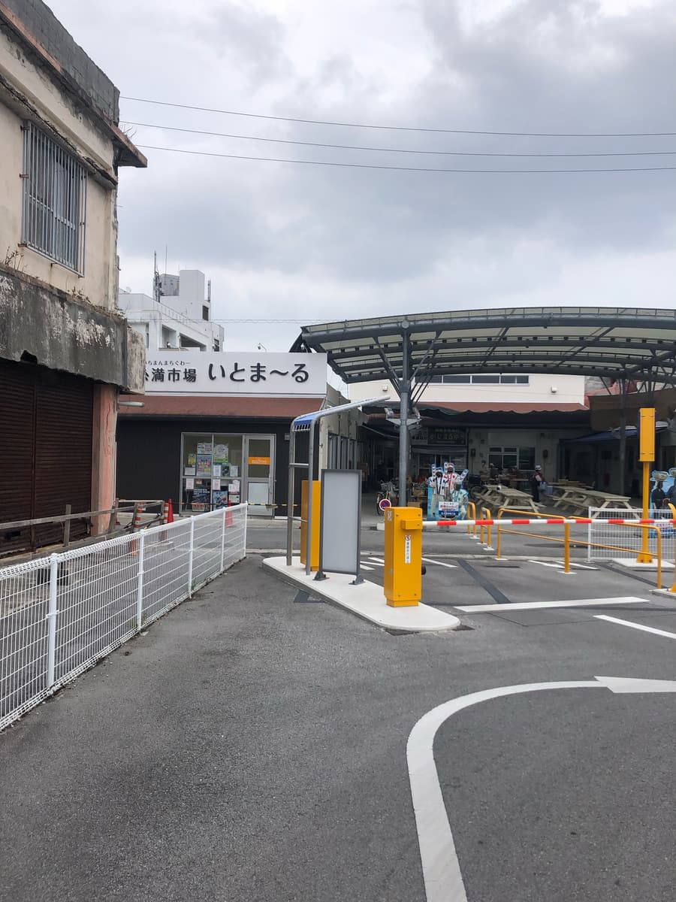
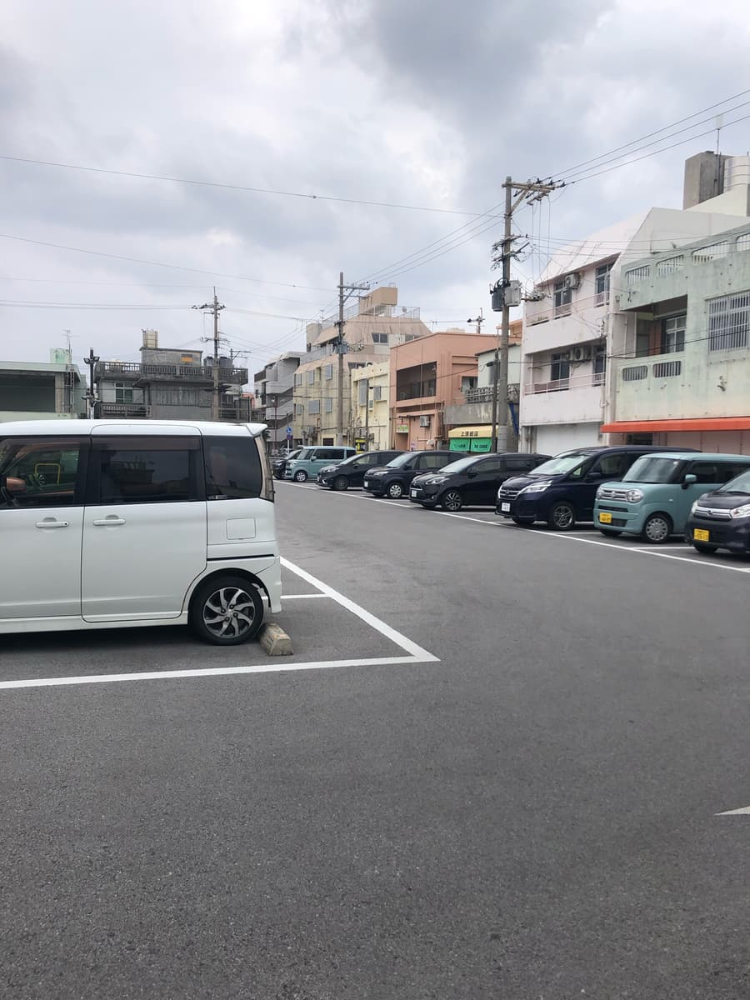
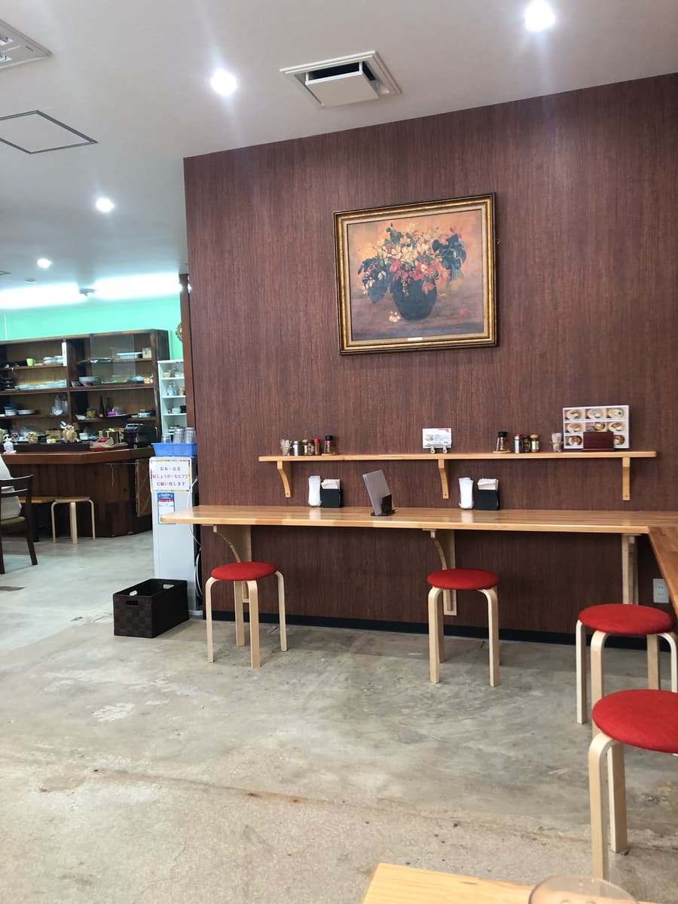
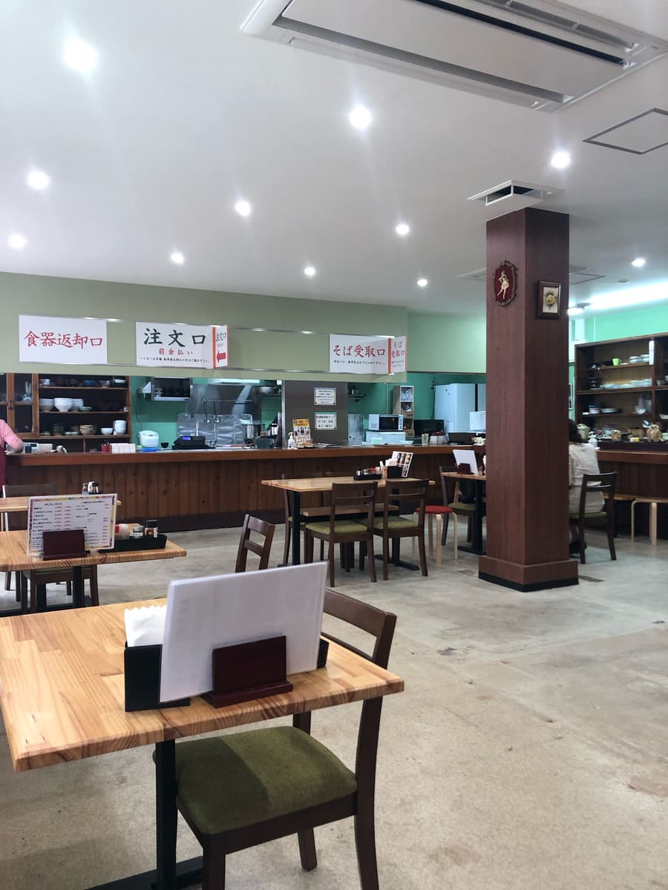
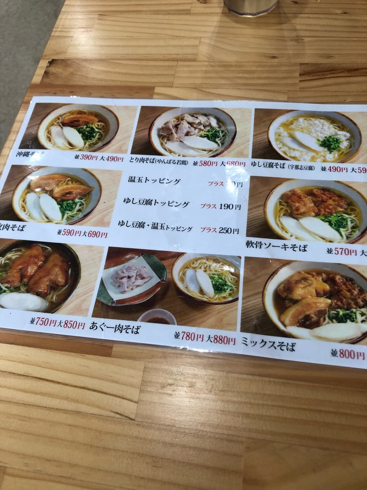
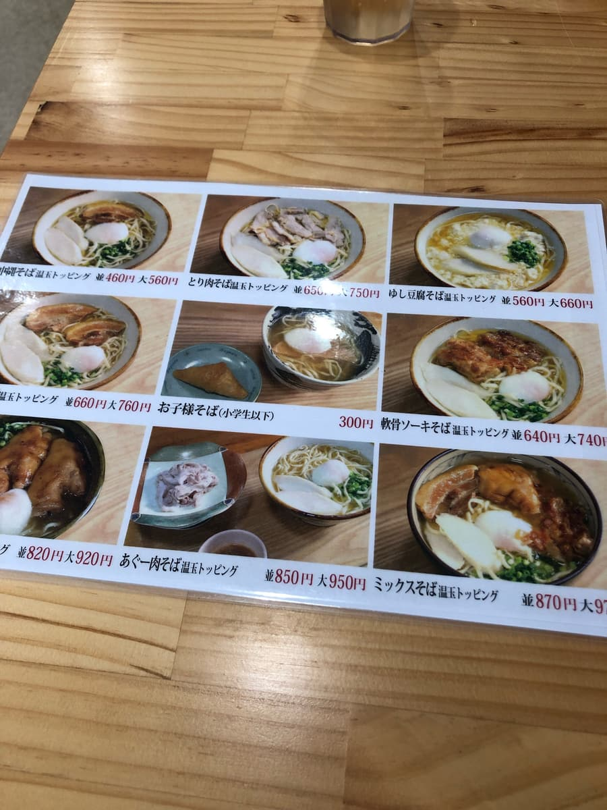
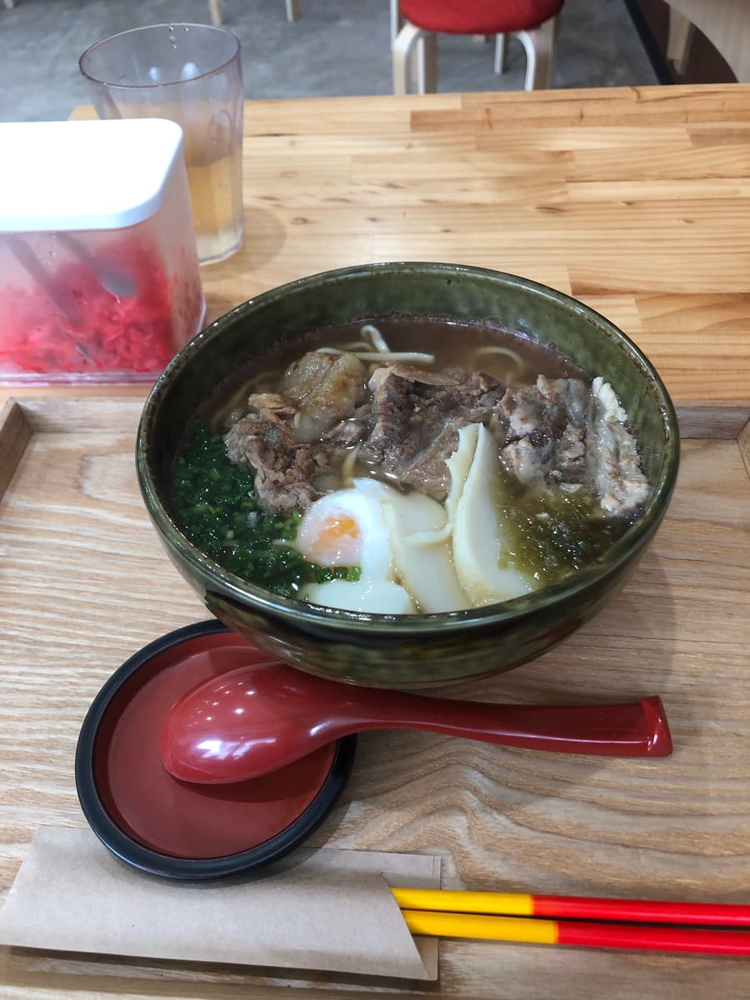
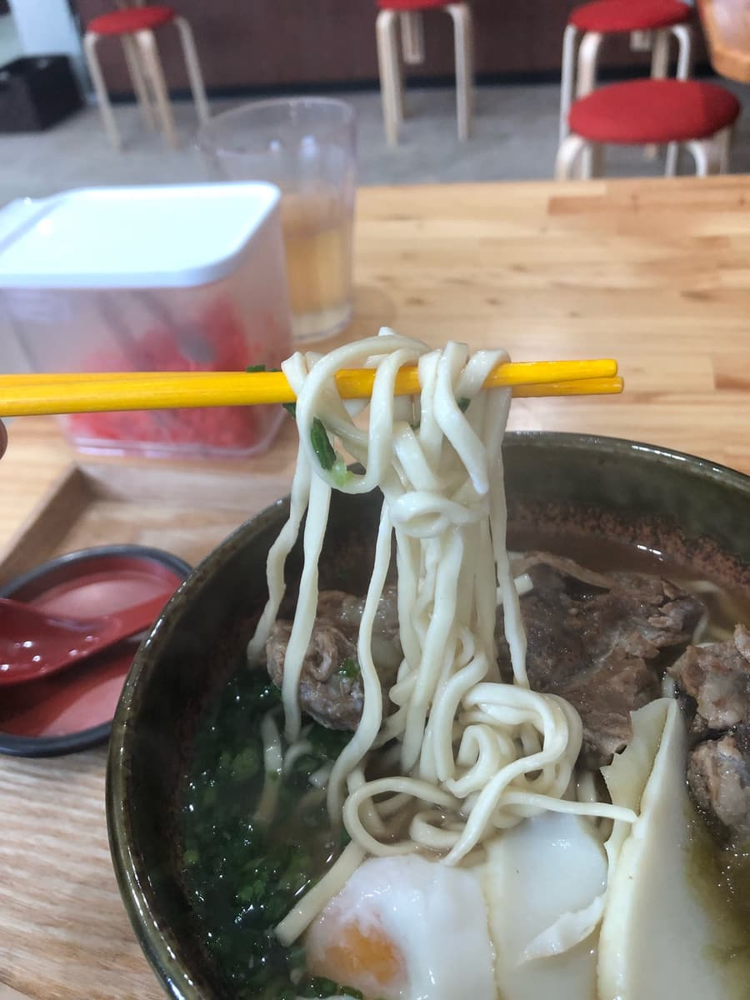

I ate here in November 2023. This shop is a participating shop in the “13th Okinawa Soba Stamp Rally (2023.10.1–2024.2.29),” and I went as the 21st of 34 shops 😊

This shop has no parking lot, but a few dozen meters away on foot there is a large paid parking lot at “Itoman Market Itomaru,” and according to the stamp rally booklet, “show your parking ticket for a one-hour fee cashback,” so the parking problem seems fine 😁




For my order I chose the “soft-bone pork ribs soba (regular) with soft-boiled egg topping” introduced in the stamp rally booklet.


The “soft-bone pork ribs soba (regular) with soft-boiled egg topping” I ordered is ¥640, but when I showed my parking ticket they said “we'll take ¥100 off,” making it ¥540 😊 You don't see this price range much at other shops; I think it's reasonable.

First, a sip of the broth. This shop's broth is made with bonito, kelp, and Agu pork bone with no chemical seasoning, so they are particular about ingredients. The flavor is gentle too.

Next, the noodles 🤗 They are medium-thick straight noodles and on the soft side. The soft-bone pork ribs also seem to be seasoned with preservative-free soy sauce; there was a little sinewy texture, but they were tender and gently flavored.
After finishing, when leaving the paid parking lot, I inserted my parking ticket to put in the cashback ¥100, and to my surprise the display said “¥0” (;^ω^)
I think it's because I finished eating in a short 10 to 20 minutes and took my car out. In the end, the soba came to a quite reasonable ¥540, lol
Rating (9/15): It's just plain tasty 😊 Moreover, if you leave the parking lot early, the parking fee is free and you also get the ¥100 cashback with the parking ticket at the shop, so effectively you can have Okinawa soba at a reasonable price 😁
Noodles: ★★★☆☆（3）
Soup: ★★★☆☆（3）
Toppings: ★★★☆☆（3）